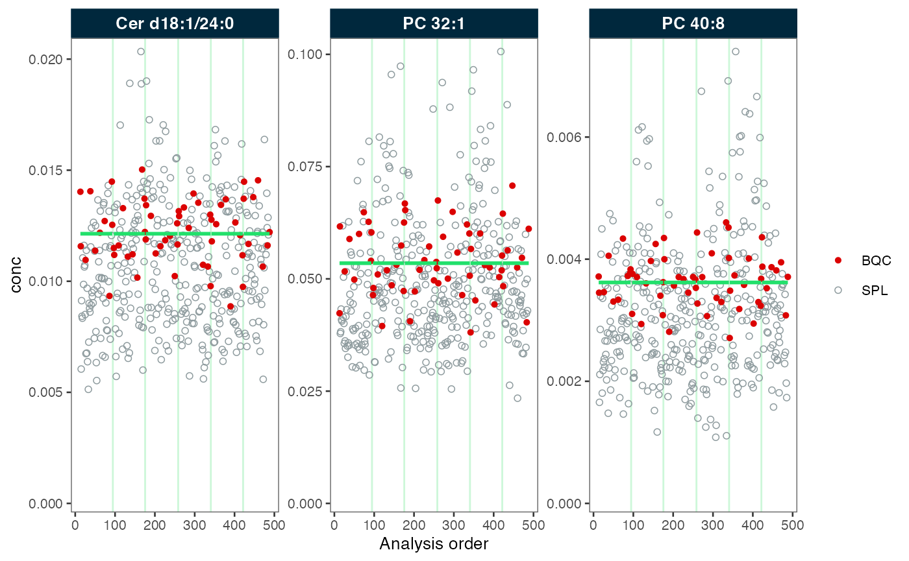

Run-order Drift Correction (Smoothing)
Source:vignettes/articles/T_DriftCorrect.Rmd
T_DriftCorrect.RmdMiDAR provides different functions for run-order drift correction, differing by the employed smoothing algorithm. These functions can be categorized into functions that are either more suited for QC or study sample-based drift correction.
The data must be provided via a MidarExperiment object, whereby raw
data that was imported or processed data can be corrected, such as
intensity or conc values.
These drift correction functions have various options for customization, please refer the manual page on Drift and Batch Correction for more details.
Import data
In this tutorial, we import pre-calculcated raw oncentration values
from a CSV file. This file must contain a column with batch information
(batch_id) if batch-wise correction should be applied, see
import_data_csv() for more information.
library(midar)
myexp <- midar::MidarExperiment()
myexp <- import_data_csv(
myexp,
path = "smooth-testdata.csv",
variable_name = "conc",
import_metadata = TRUE)QC-based smoothing
Now we apply a QC-based drift correction using cubic spline. See
correct_drift_cubicspline() for more information.
mexp_drift <- correct_drift_cubicspline(
myexp,
batch_wise = FALSE,
variable = "conc",
ref_qc_types = "BQC",
recalc_trend_after = TRUE)
#> ℹ Applying `conc` drift correction...
#> ✔ Drift correction was applied to 3 of 3 features (across all batches).
#> ℹ The median CV change of all features in study samples was -4.69% (range: -8.21% to 1.17%). The median absolute CV of all features decreased from 30.56% to 28.52%.Next, we inspect the data before and after the correction. We observe that the green trendline follows the QC samples (in red). After the correction, the trend has been fully smoothed out, resulting in a straight line.
plot_runscatter(mexp_drift, variable = "conc_before", qc_types = c("BQC", "SPL"),
rows_page = 1, cols_page = 3, show_trend = TRUE)
#> Generating plots (1 page)...#> - done!
plot_runscatter(mexp_drift, variable = "conc", qc_types = c("BQC", "SPL"),
rows_page = 1, cols_page = 3, show_trend = TRUE)
#> Generating plots (1 page)...
#> - done!Sample trend-based smoothing
Above, we observe that the QC samples do not fully represent the trends of the study samples. This discrepancy can occur when the QC samples, which often based on pooled samples, differ in handling or properties from the study samples.
We therefore now try a sample-based drift correction gaussian kernel
smoothing. See correct_drift_gaussiankernel) for more
information.
mexp_drift <- correct_drift_gaussiankernel(
myexp,
variable = "conc",
kernel_size = 10,
batch_wise = FALSE,
ref_qc_types = "SPL",
recalc_trend_after = TRUE)
#> ℹ Applying `conc` drift correction...
#> ✔ Drift correction was applied to 3 of 3 features (across all batches).
#> ℹ The median CV change of all features in study samples was -6.18% (range: -11.46% to -1.49%). The median absolute CV of all features decreased from 30.56% to 25.86%.Again, we inspect the data before and after the correction. We observe that the green trendline follows the samples (in grey). After the correction, the trend has been fully smoothed out, resulting in a straight line.
plot_runscatter(mexp_drift, variable = "conc_before", qc_types = c("BQC", "SPL"),
rows_page = 1, cols_page = 3, show_trend = TRUE)
#> Generating plots (1 page)...#> - done!
plot_runscatter(mexp_drift, variable = "conc", qc_types = c("BQC", "SPL"),
rows_page = 1, cols_page = 3, show_trend = TRUE)
#> Generating plots (1 page)...
#> - done!Now, the trends of the study samples appear to be fairly well corrected. However, in this example, the differences compared to the previous QC-based smoothing are not very pronounced.
Within-batch drift correction
In the examples before we app;ied drift correction across all batches. However, if batch-effects are present that break the drifts, it is recommended to apply drift correction within each batch.
We explore a within-batch drift correction using a sample-based
gaussian kernel smoothing from above in this next example, by setting
batch_wise = TRUE.
mexp_drift <- correct_drift_gaussiankernel(
myexp,
variable = "conc",
kernel_size = 10,
batch_wise = TRUE,
ref_qc_types = "SPL",
recalc_trend_after = TRUE)
#> ℹ Applying `conc` drift correction...
#> ✔ Drift correction was applied to 3 of 3 features (batch-wise).
#> ℹ The median CV change of all features in study samples was -1.20% (range: -1.88% to -0.61%). The median absolute CV of all features across batches decreased from 26.28% to 25.67%.Now, each batch has its own trendline corresponding the trend in each batch of each feature. Contrary to the previous correction across batches, we now observe clear differences in the trends still present after the correction. This is an effect of the correct applied independly to each batch, to different sample sizes and present batch effects. Therefore, it is often necessary to apply batch correction after bathc-wise drift correction
plot_runscatter(mexp_drift, variable = "conc_before", qc_types = c("BQC", "SPL"),
rows_page = 1, cols_page = 3, show_trend = TRUE)
#> Generating plots (1 page)...
#> - done!
plot_runscatter(mexp_drift, variable = "conc", qc_types = c("BQC", "SPL"),
rows_page = 1, cols_page = 3, show_trend = TRUE)
#> Generating plots (1 page)...
#> - done!We therefore apply a subsequent batch correction using median-centering, resulting in an alignment of the batches.
mexp_drift <- midar::correct_batch_centering(
mexp_drift,
ref_qc_types = "SPL",
variable = "conc",
correct_scale = TRUE
)
#> ℹ Adding batch correction on top of `conc` drift-correction.
#> ✔ Batch median-centering of 6 batches was applied to drift-corrected concentrations of all 3 features.
#> ℹ The median CV change of all features in study samples was -5.38% (range: -8.80% to -0.60%). The median absolute CV of all features decreased from 30.00% to 25.68%.
plot_runscatter(mexp_drift, variable = "conc", qc_types = c("BQC", "SPL"),
rows_page = 1, cols_page = 3, show_trend = TRUE)
#> Generating plots (1 page)...#> - done!Export corrected data
Next, we can either continue to work with the corrected data using
MiDAR functions or export the data.
save_dataset_csv(
mexp_drift,
path = "drift-batch-corrected-conc-data.csv",
variable = "conc",
filter_data = FALSE
)
#> ✔ Concentration values for 498 analyses and 3 features have been exported to 'drift-batch-corrected-conc-data.csv'.